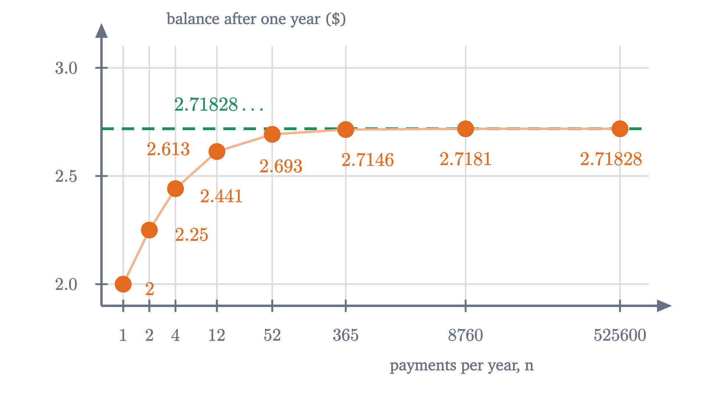
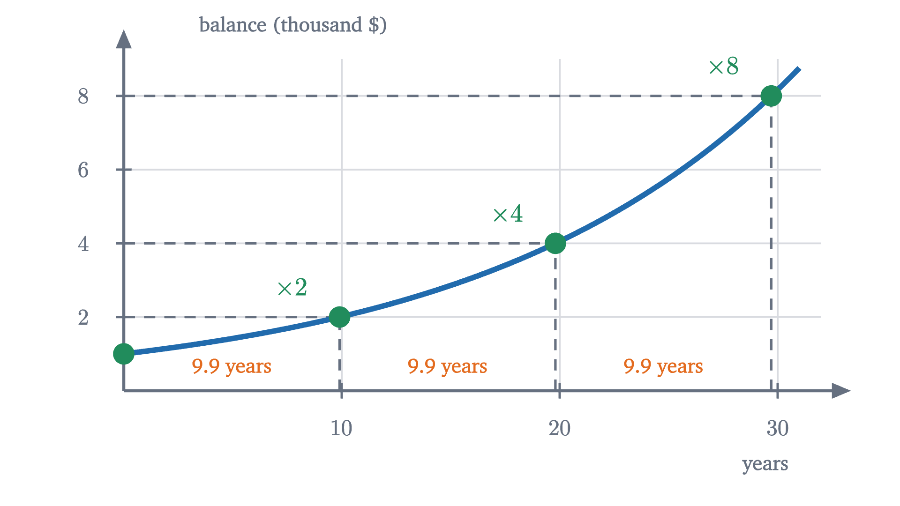
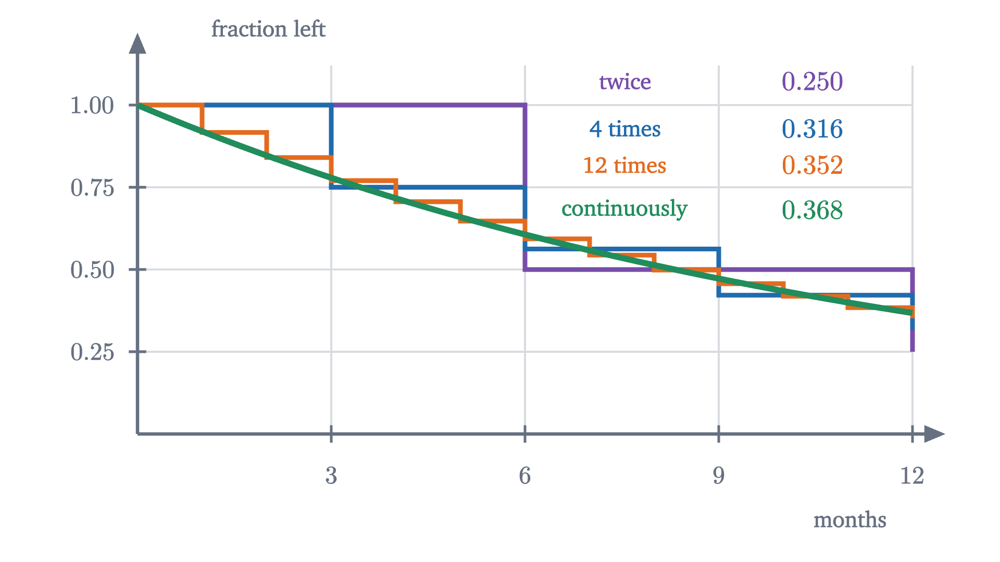

Compound interest and where e comes from
Pay 100% interest in more and more instalments and a dollar grows to 2, 2.25, 2.44, 2.61, and then stops short of 2.72. That ceiling is the number e.
A bank offers you 100% interest per year. Put in one dollar and a year later you have two. Now suppose a second bank offers the same 100% but pays it in two halves: 50% after six months and another 50% at the end of the year. That sounds like the same deal, and it pays more, because the second 50% is taken on $1.50 and not on $1. You finish with $2.25.
If splitting the year in two earns an extra quarter, split it further. Pay 25% four times, or a twelfth of 100% every month, or a sliver every second. Each split adds a little. So here is the question: by paying the same 100% in enough instalments, can a bank turn your dollar into a hundred dollars by the end of the year? Into a million?
Splitting the year
Start with the case of two payments and watch where each cent comes from.
The dollar itself earns the same total either way: 50 cents twice is the same as a dollar once. The extra quarter is the green piece, the interest that the first 50 cents earned during the second half of the year. Paying interest and then paying interest on the result is called compounding, and the green piece is the whole reason compounding beats a single payment.
There is a quicker way to do the arithmetic. Adding 50% to a balance is the same as multiplying it by $1.5$, so two payments multiply the dollar by $1.5$ twice: $1.5^2 = 2.25$. With four payments of 25% each, the balance is multiplied by $1.25$ four times:
In general, if the year is cut into $n$ equal periods and each pays a rate of $\frac{1}{n}$, the dollar is multiplied by $1 + \frac1n$ at the end of every period, $n$ times over. Writing $a_n$ for the balance at the end of the year,
So $a_1 = 2$, $a_2 = 2.25$ and $a_4 \approx 2.44$. The animation at the top shows the balance during the year for each of these, as a staircase with one step per payment.
Pause and try
Monthly payments give $a_{12} = \left(1 + \frac{1}{12}\right)^{12}$. Before reaching for a calculator, guess: going from 1 payment to 2 gained $0.25, and going from 2 to 4 gained about $0.19. Will going from 4 to 12 gain more than that or less? Then compute it.
Show answerHide answer
$a_{12} = 1.08333\ldots^{12} \approx 2.6130$, so tripling the number of payments gained about $0.17. That is less than the $0.19 that came from merely doubling it. The gains are shrinking.
The numbers level off
The gains shrink, but that alone settles nothing. A sum of shrinking gains can still grow past every bound (the sums $1 + \frac12 + \frac13 + \frac14 + \cdots$ do), so we need more data. Here is the balance at the end of the year when the interest is paid yearly, monthly, weekly, daily, hourly and every minute.
| payments per year, $n$ | rate per payment | balance $a_n$ after one year |
|---|---|---|
| 1 | 100% | 2 |
| 2 | 50% | 2.25 |
| 4 | 25% | 2.44141 |
| 12 | 8.33% | 2.61304 |
| 52 | 1.92% | 2.69260 |
| 365 | 0.274% | 2.71457 |
| 8760 | 0.0114% | 2.71813 |
| 525600 | 0.00019% | 2.71828 |

Going from daily to hourly payments adds a third of a cent, and going from hourly to every minute adds less than two hundredths of a cent. The balance appears to be stuck just above $2.718.
A table cannot prove that, though. It shows eight values of $n$, and the claim is about all of them. To be sure that no number of payments reaches $3, let alone a million, we have to understand why the growth stalls.
Why it levels off: generations of interest
Two things happen when $n$ grows. There are more payments, which pushes the balance up, and each payment is at a smaller rate, which pushes it down. The table says these nearly cancel. To see how, sort the money in the account by where it came from, as in the bar figure: the dollar, interest on the dollar, interest on that interest, and so on.
Take $n = 3$, where each payment multiplies the balance by $1 + \frac13$. Multiply out the three factors without simplifying:
Each term of the expansion comes from choosing, in every factor, either the $1$ (the money sits still that period) or the $\frac13$ (it earns interest that period). Choosing $1$ three times gives the dollar. Choosing $\frac13$ in exactly one of the three periods can be done in 3 ways, giving $3 \cdot \frac13 = 1$: the interest on the dollar. Choosing $\frac13$ in two of the periods gives interest that was itself earned on interest, the second generation, and there are 3 ways, each worth $\frac19$. The last term is third-generation interest.
Pause and try
Do the same for $n = 4$: expand $\left(1 + \frac14\right)^4$ as (dollar) + (first generation) + (second generation) + $\cdots$. You will need the number of ways to choose 2 of 4 periods, which is 6, and 3 of 4, which is 4. Which generation changed the most compared with $n = 3$, where the generations were $1, \frac13, \frac1{27}$?
Show answerHide answer
$\left(1 + \frac14\right)^4 = 1 + 4 \cdot \frac14 + 6 \cdot \frac1{16} + 4 \cdot \frac1{64} + \frac1{256} = 1 + 1 + 0.375 + 0.0625 + 0.0039\ldots$, which adds to $2.4414\ldots$ as before. The first generation is exactly 1 again. The second generation rose from $0.333$ to $0.375$, and the third from $0.037$ to $0.0625$. The second generation gained the most, about 4 cents, and all the extra money is in the generations after the first.
The first generation is always exactly $1: $n$ payments of $\frac1n$ on the dollar. That is the cancellation in its simplest form. For the second generation there are more ways to choose two periods as $n$ grows, but each is worth only $\frac{1}{n^2}$. The figure shows how that contest comes out.
Here is the reason for the caps, on the second generation. The number of ways to choose 2 periods out of $n$ is $\frac{n(n-1)}{2}$, so the second generation is worth
For $n = 2, 3, 4, 12$ this is $\frac14, \frac13, \frac38, \frac{11}{24}$, the green layers of the figure. It grows with $n$, and it is always less than $\frac12$. Interest on interest can never be worth more than 50 cents, however finely the year is cut. The same calculation caps the third generation at $\frac16$ and the fourth at $\frac1{24}$, and those caps shrink so fast that the caps on the second generation and all the later ones together add up to less than a dollar. That is the idea. To make it a proof we need the general formula for the layers, which is the binomial theorem.
The theorem: increasing, and never as large as 3
For whole numbers $0 \le k \le n$, write $\binom{n}{k}$ for the number of ways to choose $k$ of $n$ things. Choosing them in order can be done in $n(n-1)\cdots(n-k+1)$ ways, and each set of $k$ things gets counted once for each of its $k! = k(k-1)\cdots 2 \cdot 1$ orderings, so
The binomial theorem, proved in the lesson on Pascal’s triangle, says that $(1 + x)^n = \sum_{k=0}^{n} \binom{n}{k} x^k$, and the reason is the one we used for $n = 3$: a term $x^k$ arises once for every way of choosing the $x$ from $k$ of the $n$ factors.
Read the proof against the picture. Formula $(*)$ is the height of one colored layer. Part 1 says each layer is taller in the next column and a new layer is added on top. Part 2 says layer $k$ never passes its dashed cap $\frac{1}{k!}$, and that the caps add up to less than 3.
So the answer to the opening question is no. Under every payment schedule the dollar ends the year below $3.
The number e
We know the balances $a_1, a_2, a_3, \ldots$ increase and never reach 3. They look as though they are closing in on a particular number, and we should say what that means.
The number $\varepsilon$ is a tolerance, and the definition says that whatever tolerance is demanded, the sequence is eventually within it and stays within it. Our sequence cannot go back down and cannot pass 3, so its values ought to pile up somewhere at or below 3. They do, and that is a theorem about the real numbers that we will use without proving.
This is proved in a first course in real analysis, and it rests on the property that separates the real numbers from the fractions: the number line has no gaps. (Among fractions alone it is false. The increasing sequence $1.4, 1.41, 1.414, \ldots$ of decimal truncations of $\sqrt2$ is bounded above by 2 and has no fraction as its limit.) Our sequence is increasing and bounded above by 3, so the theorem applies, and the limit gets a name.
Notice what has and has not been shown. We proved that the limit exists and is at most 3, and since $a_{525600} \approx 2.71828$ and the sequence increases, $e > 2.71827$. We have not proved the digits beyond those, though Problem 8 gives a way to compute as many as you like. And $e$ is not a fraction: Euler proved in 1737 that it is irrational, so its decimal expansion never repeats.
Other rates and other lengths of time
Real banks do not pay 100%. Suppose the rate is $r$ per year, written as a decimal (6% is $r = 0.06$), paid in $n$ instalments of $\frac{r}{n}$. One dollar becomes $\left(1 + \frac{r}{n}\right)^n$ after a year. For $1000 at 6%:
| payments per year | balance after one year |
|---|---|
| 1 | $1060.00 |
| 12 | $1061.68 |
| 365 | $1061.83 |
| limit | $1061.84 |
Again there is a ceiling. Is it a new number for each rate, or is it related to $e$?
Pause and try
At a 50% rate, what do you expect one dollar to approach as the payments become continuous? Two natural guesses: half as much growth as at 100%, that is $1 + \frac{e - 1}{2} \approx 1.859$; or something else. Test your guess by computing $\left(1 + \frac{0.5}{n}\right)^n$ for $n = 1000$.
Show answerHide answer
$1.0005^{1000} \approx 1.6485$, well short of $1.859$. Half the rate gives less than half the growth, because there is also less interest on interest. The number is close to $\sqrt{e} = e^{0.5} \approx 1.6487$, and here is why. A 50% rate for one year, in 1000 payments of 0.05%, is the same schedule as a 100% rate in payments of 0.05% that is stopped after half a “year” of 2000 payments. Stopping the growth to $e$ halfway through its exponent gives $e^{1/2}$.
The same reasoning works for every positive rate. Paying $\frac{r}{n}$ per period is what a 100% bank does if it makes $x = \frac{n}{r}$ payments a year, since then each payment is $\frac1x = \frac{r}{n}$. Our $n$ payments are $r$ years’ worth of that bank’s schedule:
As $n \to \infty$, $x \to \infty$ too, the square bracket approaches $e$, and the whole expression approaches $e^r$.
For $r = 0$ the statement reads $1 = 1$. For negative $r$ the theorem is still true and we will not prove it in general; Problem 6 does the case $r = -1$.
Now let the money stay for $t$ years, with $n$ payments per year. There are $nt$ payments in all, and
Only the product $rt$ matters. Six percent for ten years, 10% for six years and 60% for one year all multiply the money by $e^{0.6} \approx 1.822$ under continuous compounding.
Doubling time
A quantity that grows as $Pe^{rt}$ has a property that straight-line growth lacks. Ask how long it takes to double: we need $e^{rT} = 2$. The exponent to which $e$ must be raised to give 2 is called the natural logarithm of 2, written $\ln 2$, and its value is $0.6931\ldots$ (you can check that $e^{0.6931} \approx 2.0000$; the next lesson is about such exponents). So $rT = \ln 2$ and
The starting amount $P$ has cancelled out of this, and so has the starting time: from any moment, the wait until the amount is twice as large is the same $T$.

With $r$ given as a percentage the formula reads $T \approx \frac{69.3}{\text{percent}}$, which is the rule of 70 used for mental arithmetic: at 7% growth a quantity doubles in about 10 years, at 2% in about 35.
Pause and try
A town’s population grows continuously at 3.5% per year. Roughly how long until it is four times as large?
Show answerHide answer
Doubling takes $\frac{\ln 2}{0.035} \approx 19.8$ years (the rule of 70 gives 20). Quadrupling is doubling twice, so about $39.6$ years. It is not four times the doubling time, because the second doubling starts from the larger population.
Worked examples
Negative rates and decay
Nothing in $\left(1 + \frac{r}{n}\right)^n$ requires $r$ to be positive. Take $r = -1$: a quantity that loses 100% per year, in $n$ instalments. A tank that loses half of what it holds, twice, keeps $\left(\frac12\right)^2 = \frac14$. Losing a quarter four times leaves $\left(\frac34\right)^4 \approx 0.316$. Splitting a loss into instalments softens it, because each later instalment is taken from a smaller amount.

In the limit the fraction left is $e^{-1} = \frac1e \approx 0.368$. A quantity that shrinks as $Pe^{-rt}$ with $r > 0$ is said to decay exponentially, and in place of a doubling time it has a half-life $\frac{\ln 2}{r}$, by the same calculation as before. Radioactive atoms and a drug leaving the bloodstream behave this way.
The formula has limits. With a single instalment of $-100\%$ everything is lost at once (the factor $1 + \frac{r}{n}$ is 0), and if $r < -n$ the factor $1 + \frac{r}{n}$ is negative, which describes nothing; the limit is unaffected, since for a fixed $r$ the factor is positive once $n > |r|$. And the model is only as good as its assumption that the growth in each short period is proportional to the amount present. A population that runs out of food stops obeying $Pe^{rt}$.
Where does continuous growth go from here? The balance $Pe^{rt}$ grows at every moment at a rate proportional to its current size, and making “rate at a moment” precise is the job of the derivative. There, $e^x$ will be singled out as the one exponential function whose rate of growth equals its own value.
Check yourself
You put $500 in an account paying 8% per year, compounded continuously. What is it worth after 10 years?
Problems
Work these with pencil, paper and a calculator before opening the solutions. The first three repeat the lesson’s calculations, the next three combine them, and the last two extend the lesson.
Problem 1
Compute $a_3 = \left(1 + \frac13\right)^3$ and $a_5 = \left(1 + \frac15\right)^5$ exactly, as a fraction and as a decimal. Check that $a_3 < a_4 < a_5$, given $a_4 = 2.44140625$.
Show solutionHide solution
$a_3 = \left(\frac43\right)^3 = \frac{64}{27} \approx 2.37037$. $a_5 = \left(\frac65\right)^5 = \frac{7776}{3125} = 2.48832$. Indeed $2.37037 < 2.44141 < 2.48832$, as part 1 of the theorem requires.
Problem 2
$2000 is invested at 4% per year for 3 years. Find the final balance if interest is compounded (a) monthly, (b) continuously.
Show solutionHide solution
(a) The monthly rate is $\frac{0.04}{12}$ and there are 36 payments: $2000\left(1 + \frac{0.04}{12}\right)^{36} \approx 2000 \times 1.127272 = \$2254.54$. (b) $rt = 0.12$, so the balance is $2000\,e^{0.12} \approx 2000 \times 1.127497 = \$2254.99$. The difference is 45 cents. Both exceed the simple-interest value $2000 \times 1.12 = \$2240$.
Problem 3
An investment grows continuously at 5% per year. Find its doubling time exactly and by the rule of 70. How long until it is eight times its starting value?
Show solutionHide solution
$T = \frac{\ln 2}{0.05} \approx \frac{0.6931}{0.05} = 13.86$ years. The rule of 70 gives $\frac{70}{5} = 14$ years. Eight is $2^3$, three doublings, so it takes $3 \times 13.86 \approx 41.6$ years.
Problem 4
For $n = 12$, compute the third generation of interest, $T_3(12) = \binom{12}{3}\frac{1}{12^3}$, and compare it with its cap $\frac{1}{3!}$. Then use formula $(*)$ to find how large $n$ must be for the second generation $T_2(n)$ to be within one cent of its cap of 50 cents.
Show solutionHide solution
$\binom{12}{3} = \frac{12 \cdot 11 \cdot 10}{6} = 220$ and $12^3 = 1728$, so $T_3(12) = \frac{220}{1728} \approx 0.1273$, below the cap $\frac16 \approx 0.1667$. By $(*)$ it is also $\frac16 \cdot \frac{11}{12} \cdot \frac{10}{12}$, which agrees. For the second part, $T_2(n) = \frac12\left(1 - \frac1n\right) = \frac12 - \frac{1}{2n}$, which is within $0.01$ of $\frac12$ when $\frac{1}{2n} \le 0.01$, that is, $n \ge 50$. Weekly payments already capture all but a cent of the interest on interest.
Problem 5
Carbon-14 decays exponentially with a half-life of 5730 years. (a) Find the continuous rate $r$ in the model $Pe^{-rt}$. (b) What fraction of the carbon-14 in a piece of wood remains after 2000 years?
Show solutionHide solution
(a) The half-life is $\frac{\ln 2}{r} = 5730$, so $r = \frac{0.6931}{5730} \approx 0.000121$ per year, about $0.0121\%$ per year. (b) $rt = 2000 \times \frac{\ln 2}{5730} \approx 0.2419$, and $e^{-0.2419} \approx 0.785$. About 78.5% remains. As a check, 2000 years is $\frac{2000}{5730} \approx 0.349$ half-lives, and $\left(\frac12\right)^{0.349} \approx 0.785$.
Problem 6
Show that $\displaystyle\lim_{n \to \infty}\left(1 - \frac1n\right)^n = \frac1e$, using only the definition of $e$ and the rules for limits of products and quotients. (Hint: write $1 - \frac1n$ as $\frac{n-1}{n}$ and take the reciprocal.)
Show solutionHide solution
For $n \ge 2$,
since $\left(1 + \frac{1}{n-1}\right)^n$ is $\left(1 + \frac{1}{n-1}\right)^{n-1}$ times one more factor. As $n \to \infty$, $a_{n-1} \to e$ and $1 + \frac{1}{n-1} \to 1$, so the denominator approaches $e \cdot 1 = e$, which is not zero. The limit of a quotient is the quotient of the limits when the denominator’s limit is nonzero, so the expression approaches $\frac1e$. Numerically, $n = 12$ gives $0.352$ and $\frac1e \approx 0.368$.
Problem 7
The expression $\left(1 + \frac1n\right)^n$ has a base approaching 1 and an exponent growing without bound. Show that two other expressions of the same kind behave quite differently: (a) $\left(1 + \frac{1}{n^2}\right)^n$ approaches 1; (b) $\left(1 + \frac1n\right)^{n^2}$ grows without bound. Use the theorem that $2 \le a_m < 3$ for all $m$.
Show solutionHide solution
(a) Write $\left(1 + \frac{1}{n^2}\right)^n = \left[\left(1 + \frac{1}{n^2}\right)^{n^2}\right]^{1/n} = \left(a_{n^2}\right)^{1/n}$. Since $1 < a_{n^2} < 3$, the expression lies between $1$ and $3^{1/n}$. The $n$-th root of 3 approaches 1 (for instance $3^{1/100} \approx 1.011$), so the expression is squeezed to 1. (b) $\left(1 + \frac1n\right)^{n^2} = \left(a_n\right)^n \ge 2^n$, which exceeds any given bound once $n$ is large. So “base near 1, exponent large” decides nothing by itself; the answer depends on how fast each one moves.
Problem 8
Let $S_m = 1 + 1 + \frac{1}{2!} + \frac{1}{3!} + \cdots + \frac{1}{m!}$, the sum of the first caps. (a) Show that $a_n \le S_n$ for every $n$. (b) Fix $m$. Show that for $n \ge m$, $a_n \ge \sum_{k=0}^{m} T_k(n)$, and by letting $n \to \infty$ deduce $e \ge S_m$. (c) Conclude that $S_m \to e$, and use $S_6$ to estimate $e$.
Show solutionHide solution
(a) In the proof of the theorem, $T_k(n) \le \frac{1}{k!}$ for each $k$, so $a_n = \sum_{k=0}^n T_k(n) \le \sum_{k=0}^n \frac{1}{k!} = S_n$.
(b) For $n \ge m$, $a_n$ is a sum of $n + 1$ nonnegative terms, and keeping only the first $m + 1$ of them can only make it smaller: $a_n \ge \sum_{k=0}^m T_k(n)$. Now hold $m$ fixed and let $n \to \infty$. Each $T_k(n) = \frac{1}{k!}\left(1 - \frac1n\right)\cdots\left(1 - \frac{k-1}{n}\right)$ is a product of a fixed number of factors that each approach 1, so $T_k(n) \to \frac{1}{k!}$, and the sum of these $m + 1$ terms approaches $S_m$. The left side approaches $e$. A limit preserves $\ge$, so $e \ge S_m$.
(c) The sequence $S_m$ is increasing and, by (b), bounded above by $e$, so it has a limit $S \le e$. By (a), $a_n \le S_n \le S$ for every $n$, so $e = \lim a_n \le S$. Hence $S = e$:
Numerically $S_6 = 1 + 1 + 0.5 + 0.166667 + 0.041667 + 0.008333 + 0.001389 = 2.718056$, already within $0.0003$ of $e$.